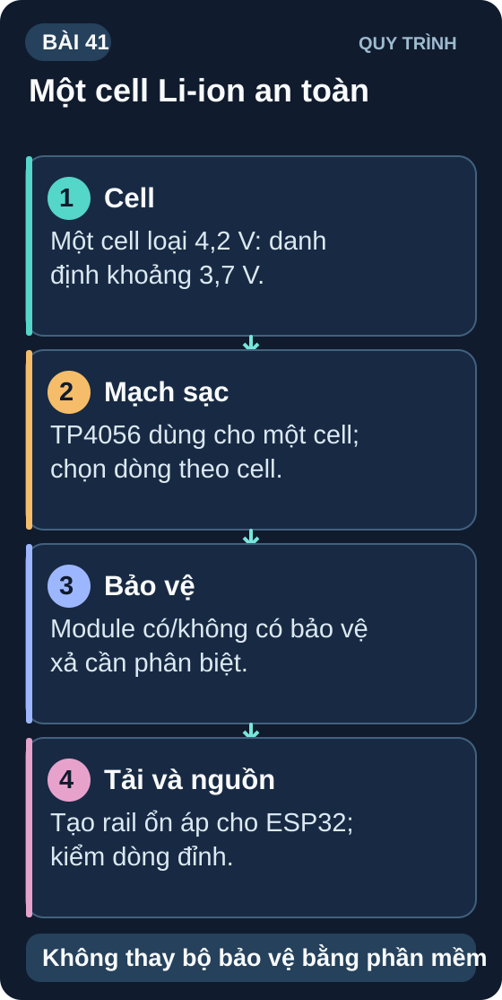
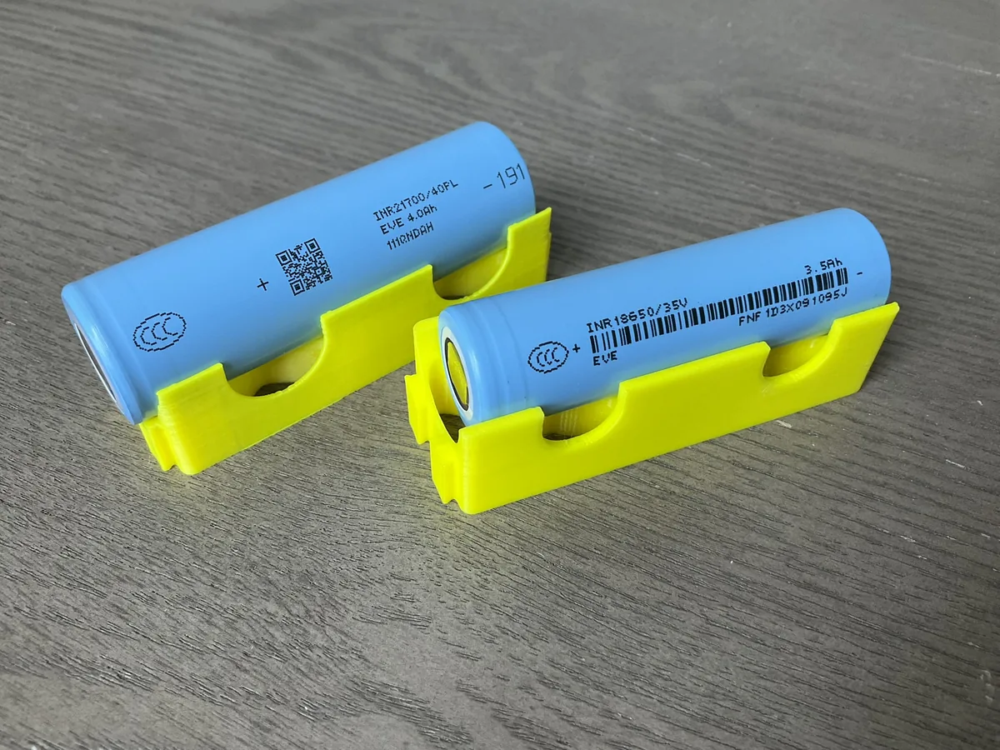
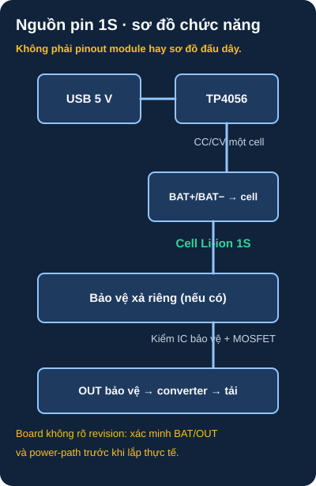

Pin LiPo & BMS — Quản Lý Nguồn Di Động
Thiết kế hệ thống nguồn pin cho dự án nhúng — từ chọn pin đúng loại đến bảo vệ quá tải, sạc và đo mức pin.
- Hiểu đặc tính cell Li-ion/LiPo loại 4,2V: 3,7V danh định, 4,2V đầy; ngưỡng cắt xả theo cell/mạch bảo vệ
- Quy ước dung lượng: mAh, C-rate — chọn dòng sạc/xả theo datasheet cell
- BMS (Battery Management System) — bảo vệ quá sạc, quá xả, ngắn mạch
- Mạch sạc TP4056 cho một cell; phân biệt module có và không có mạch bảo vệ xả
- Đo điện áp pin bằng ADC — tính phần trăm còn lại
- Mạch nguồn tích hợp: pin LiPo + TP4056 + Boost 5V → ESP32
- Ước tính thời gian pin từ dung lượng và dòng tiêu thụ
- An toàn khi làm việc với pin Li-ion — không sạc pin bị phồng


1. Đặc tính pin Li-ion / LiPo
| Thông số | Giá trị | Ghi chú |
|---|---|---|
| Điện áp tế bào (nominal) | 3,7V | Giá trị trung bình khi xả |
| Điện áp đầy (full charge) | 4,20V | Không được vượt quá → hỏng pin, nguy hiểm |
| Ngưỡng dừng xả | Theo datasheet cell | Chọn ngưỡng hệ thống và mạch bảo vệ theo đúng cell, dòng tải và nhiệt độ; không dùng một mức cố định cho mọi pin |
| Điện áp đo để ước lượng mức pin | Phụ thuộc trạng thái tải | Điện áp tức thời không đổi tuyến tính với phần trăm dung lượng còn lại |
| Dòng sạc cho phép | Theo datasheet cell | 1C là dòng bằng dung lượng định mức tính theo A; không suy ra mọi cell đều cho phép sạc 1C |
2. BMS và TP4056 — Sạc và bảo vệ pin

Đọc mô tả sơ đồ D41-1 bằng chữ
Nguồn USB 5 V cấp IC sạc TP4056 cho một cell lithium loại 4,2 V. Cell nối vào đầu BAT của mạch sạc theo datasheet và sơ đồ board xác định. TP4056 tự nó không thay thế mạch bảo vệ xả hoặc đường cấp tải đồng thời khi sạc. Một module có thể tích hợp IC bảo vệ và MOSFET để tạo cặp đầu ra OUT; module khác không có. Chỉ sau khi nhận diện chính xác phiên bản PCB, chân BAT/OUT, dòng sạc RPROG, mạch bảo vệ và power-path mới nối cell, converter và tải. Không dùng hình này như sơ đồ đấu chân cho module bất kỳ.
Datasheet TP4056 của nhà sản xuất mô tả chức năng sạc; mạch bảo vệ cell là linh kiện khác (ví dụ TI BQ2970). Khi vừa sạc vừa cấp tải, cần thiết kế đường cấp nguồn phù hợp; module TP4056 cơ bản không tự động thực hiện power-path/load sharing.
Chỉ đấu nối sau khi xác định đúng mã và revision PCB sạc, sơ đồ chân BAT/OUT, IC bảo vệ và MOSFET, dòng sạc đặt bởi RPROG, loại cell và giới hạn của nó. Không suy luận chân hoặc khả năng cấp tải từ màu hay hình dáng module. Nếu chưa có tài liệu board, dừng ở mô phỏng và phép đo không gắn pin.
// Ví dụ Arduino-ESP32 cho ESP32 cổ điển: kiểm GPIO34 trên board thật.
// R_TOP từ pin+ đến ADC, R_BOTTOM từ ADC xuống GND; đo lại R thực tế.
// Chỉ giám sát; không dùng phần trăm dưới đây làm ngưỡng bảo vệ cell.
const int BAT_PIN = 34; // ADC1 của ESP32 cổ điển; họ ESP32 khác có pin khác
const float R_TOP = 100000.0;
const float R_BOTTOM = 100000.0;
const float V_FULL = 4.20;
const float V_EMPTY = 3.20;
void setup() {
Serial.begin(115200);
analogSetPinAttenuation(BAT_PIN, ADC_11db); // ADC đo khoảng 2,1 V sau chia áp
}
float readBatteryVoltage() {
float v_adc = analogReadMilliVolts(BAT_PIN) / 1000.0; // mV đã hiệu chuẩn theo core
return v_adc * (R_TOP + R_BOTTOM) / R_BOTTOM;
}
int getBatteryPercent(float v) {
// Ước lượng thô: điện áp thay đổi theo tải, nhiệt độ và độ lão hóa.
if (v >= V_FULL) return 100;
if (v <= V_EMPTY) return 0;
return (int)((v - V_EMPTY) / (V_FULL - V_EMPTY) * 100);
}
void loop() {
float voltage = readBatteryVoltage();
int percent = getBatteryPercent(voltage);
Serial.printf("Pin: %.2fV (uoc luong %d%%)\n", voltage, percent);
if (percent < 10) Serial.println("Kiem tra pin va tai; khong thay mach bao ve!");
delay(5000);
}
Hàm analogReadMilliVolts() của Arduino-ESP32 trả điện áp đã hiệu chuẩn theo API; dải đo phụ thuộc attenuation và dòng chip. Đo điện trở chia áp thực, so với đồng hồ ở vài mức điện áp và ghi sai số. Ước lượng phần trăm tuyến tính chỉ minh họa vì đường cong xả thay đổi theo cell/tải/nhiệt; mạch bảo vệ xả độc lập vẫn bắt buộc.
- KHÔNG sạc pin bị phồng (swollen) — nguy cơ bốc cháy
- KHÔNG để pin tiếp xúc nước hoặc kim loại sharp
- Đặt ngưỡng dừng xả theo datasheet cell và mạch bảo vệ đã chọn; không lấy 3,0 V làm ngưỡng chung
- Dùng mạch bảo vệ đúng cấu hình 1S và kiểm tra ngưỡng, dòng, nhiệt độ theo cell và ứng dụng
- Khi sạc: để trên bề mặt không cháy, không để qua đêm không ai trông
1: P_tải = 5V × (240+2×300)mA = 4,2W. Năng lượng pin danh định = 3,7V × 3Ah = 11,1Wh; sau boost 85% còn khoảng 9,44Wh. T ≈ 9,44/4,2 = 2,25 giờ lý tưởng hóa; thực tế ngắn hơn khi xét dòng khởi động, tổn hao driver, pin xả và dung lượng hữu dụng.
2: Với R1 từ pin+ đến ADC và R2 từ ADC xuống GND, V_ADC/V_pin = R2/(R1+R2). Chọn R1=100kΩ, R2=100kΩ → tỷ lệ 1/2; pin 4,2V cho ADC khoảng 2,1V, có dư biên dưới mức 3,3V. Hiệu chỉnh hệ số ADC theo board thực tế; không chọn tỷ lệ sát mức tối đa vì dung sai điện trở và điện áp nguồn.